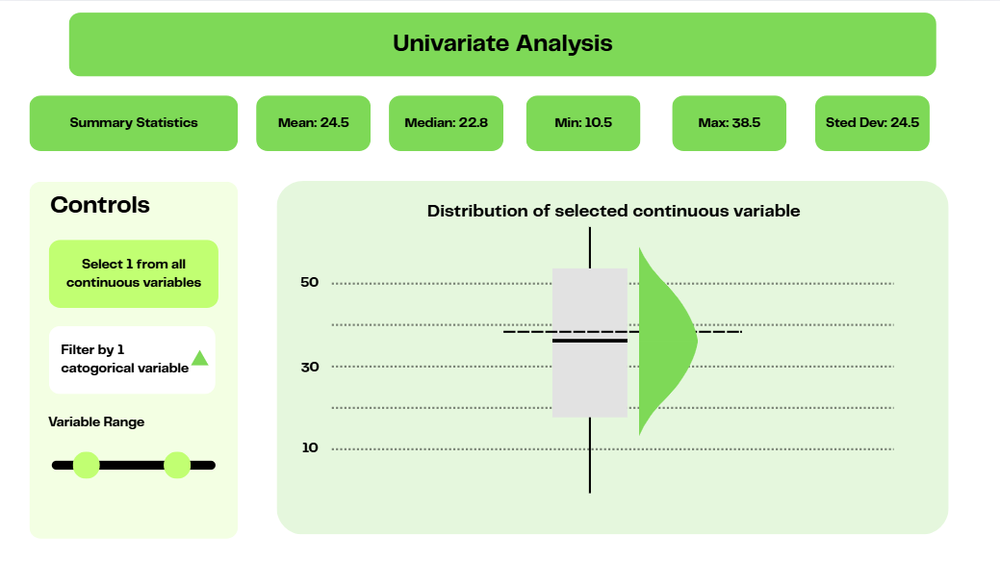
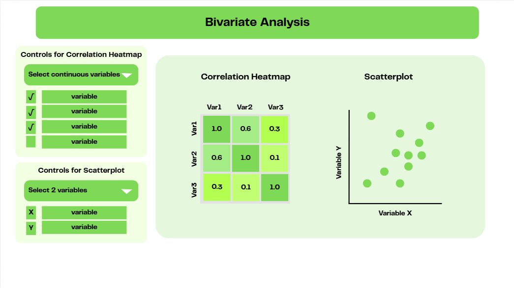
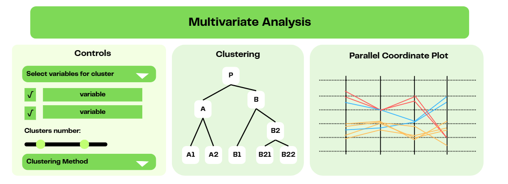
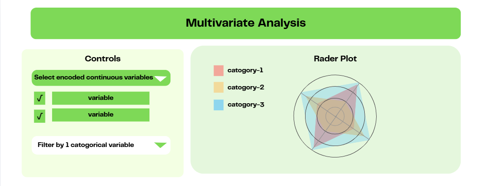
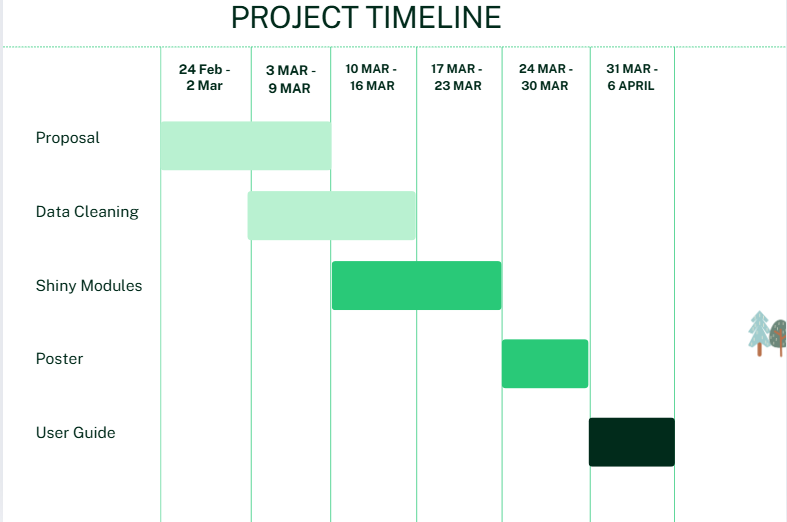

Green Spaces and Real Estate: Exploring the Influence of Environmental Factors on Housing Prices in Busan
Group Proposal

1 Background
In recent years, there has been a growing awareness of the benefits of living near environmental amenities, as more research uncovers the impact of neighborhood environments on both physical and mental health[1][2][3][4].
Studies have shown that factors such as local built environment, proximity to environmental and built amenities and neighbourhood demographics, can significantly influence well-being. Specifically, residing near green spaces has been found to have a positive effect on mental health and encourages physical activity. Correspondingly, some studies have also found that environmental amenities could play a key role in influencing property prices [4], with growing recognition of the importance of green spaces. In Korea for instance, there is a gradual shift towards preference for residential areas near green spaces [5]. However, few studies have examined the relationship between proximity to green amenities and housing prices in Korea.
2 Objectives
The primary objective of this project is to investigate how various factors, with a greater focus on the environmental amenities and the built environment factors, influences property prices in Korea. The project seeks to understand whether properties located closer to green spaces and other amenities tend to have higher market values. The secondary objective is to explore the interaction between green amenities, the built environment, and other factors, such as neighborhood demographics and seasonality, in shaping property prices.
The results from this project will help us gain insight on the factors driving property values in urban settings. As urbanization continues, the demand for green spaces and well-planned environments will likely increase. Understanding the connection between environmental amenities and local built environment and property prices could aid in creating more sustainable and livable urban areas, by offering insights for policymakers, estate developers and urban planners to make data-driven decisions on developing the city’s infrastructure and green spaces.
3 Dataset
To achieve our objectives, we obtained a dataset used in a research paper to investigate variables influencing property prices in Korea. The dataset comprises of comprehensive information on the property prices in the Busan Metropolitan City of South Korea for transactions in 2018 to 2019 and various factors that influence property prices including characteristics of the property, distance to environmental amenities and local built environments, local demographic characteristics, and season in which the transaction occurred.
4 Methodology & Approach
We will analyse and visualise the relationships between different factors and the housing prices in Busan by creating interactive R shiny applications. Users will also be able to analyse the data based on their interests and draw their own insights and conclusions regarding the housing prices in Busan.
We will create 4 sub-modules to enable univariate analyses, bivariate analyses and multivariate analyses.
5 Prototype Sketches
The following sketches were drawn to conceptualise our thoughts and discussions on the layout of the Shiny app along with its various functions.
In this sub-module, we aim to provide tools for analyzing individual variables. The interface includes summary statistics (mean, median, min, max, standard deviation), controls for variable selection and filtering, and a distribution visualization combining boxplot and half eye plot to display the selected variable’s characteristics.

This sub-module provides tools for examining relationships between pairs of variables. The interface features a correlation heatmap on the left showing strength of relationships between multiple variables, and a scatterplot on the right displaying the relationship between two selected variables. Controls allow users to select which continuous variables to include in the analysis for both visualization methods.

This panel offers tools for analyzing multiple variables simultaneously. It includes controls for selecting variables for clustering analysis, a dendrogram visualization showing hierarchical clustering results, and a parallel coordinate plot displaying relationships across multiple dimensions.

This panel provides radar plot functionality for multivariate visualization. Controls allow users to select encoded continuous variables and filter by a categorical variable. The radar plot displays multiple dimensions simultaneously with different colors representing different categories.

6 R packages
The R packages we will be using for the project include:
- Tidyverse for manipulating the data
- ggstatplot for visualising statistcal analysis
- GGally / ggpcp / ggparallel for creating parallel coordinate plot
- ggdist for visualising distributions
- corrplot for correlation heatmap
- GgESDA / ggradar / fmsb for radar chart
7 Project Timeline

8 Reference
[2]Choi, K. A., & Rezaei, M. (2022). Assessing the Correlation between Neighborhood Green Areas and the Perceived Mental Health of Residents in Metropolitan Areas. Iranian journal of public health, 51(9), 2027.
[3]Han, M. J. N., & Kim, M. J. (2019). Green environments and happiness level in housing areas toward a sustainable life. Sustainability, 11(17), 4768.